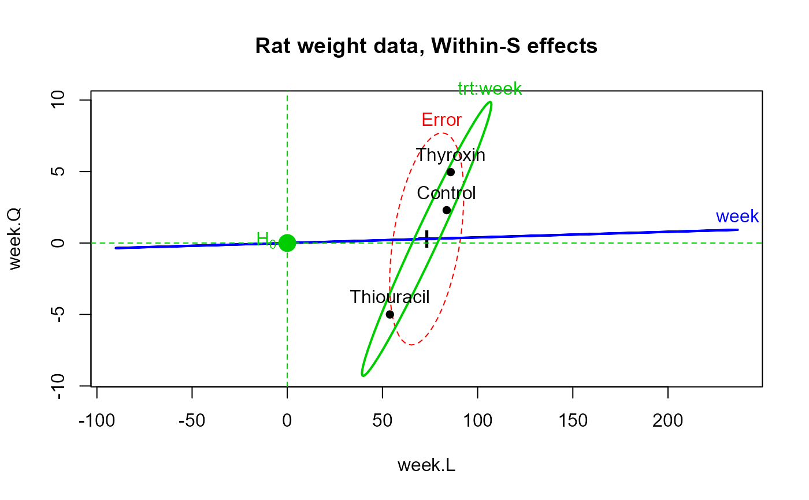
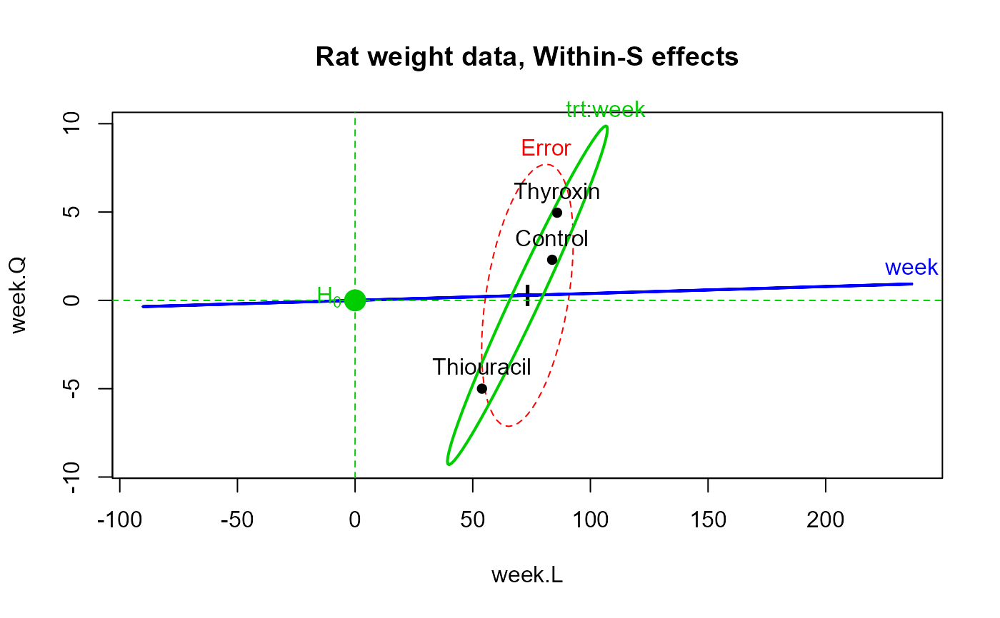

The data are from a study of weight gain, where investigators randomly assigned 30 rats to three treatment groups: treatment 1 was a control (no additive); treatments 2 and 3 consisted of two different additives (thiouracil and thyroxin respectively) to the rats drinking water. Weight was measured at baseline (week 0) and at weeks 1, 2, 3, and 4. Due to an accident at the beginning of the study, data on 3 rats from the thyroxin group are unavailable.
Format
A data frame with 27 observations on the following 6 variables.
trta factor with levels
ControlThiouracilThyroxinwt0Weight at Week 0 (baseline weight)
wt1Weight at Week 1
wt2Weight at Week 2
wt3Weight at Week 3
wt4Weight at Week 4
Source
Originally from Box (1950), Table D (page 389), where the values for weeks 1-4 were recorded as the gain in weight for that week.
Fitzmaurice, G. M. and Laird, N. M. and Ware, J. H (2004). Applied Longitudinal Analysis, New York, NY: Wiley-Interscience. https://rdrr.io/rforge/ALA/.
Details
The trt factor comes supplied with contrasts comparing Control
to each of Thiouracil and Thyroxin.
References
Box, G.E.P. (1950). Problems in the analysis of growth and wear curves. Biometrics, 6, 362-389.
Friendly, Michael (2010). HE Plots for Repeated Measures Designs. Journal of Statistical Software, 37(4), 1-40. doi:10.18637/jss.v037.i04 .
Examples
data(RatWeight)
contrasts(RatWeight$trt)
#> [,1] [,2]
#> Control -1 -1
#> Thiouracil 1 0
#> Thyroxin 0 1
rat.mod <- lm(cbind(wt0, wt1, wt2, wt3, wt4) ~ trt, data=RatWeight)
rat.mod
#>
#> Call:
#> lm(formula = cbind(wt0, wt1, wt2, wt3, wt4) ~ trt, data = RatWeight)
#>
#> Coefficients:
#> wt0 wt1 wt2 wt3 wt4
#> (Intercept) 54.75714 76.88571 102.21905 123.67143 149.15238
#> trt1 -0.05714 -0.58571 -6.41905 -15.47143 -25.15238
#> trt2 0.81429 -1.02857 2.63810 9.04286 13.70476
#>
idata <- data.frame(week = ordered(0:4))
car::Anova(rat.mod, idata=idata, idesign=~week, test="Roy")
#>
#> Type II Repeated Measures MANOVA Tests: Roy test statistic
#> Df test stat approx F num Df den Df Pr(>F)
#> (Intercept) 1 140.617 3374.8 1 24 < 2.2e-16 ***
#> trt 2 0.657 7.9 2 24 0.002334 **
#> week 1 56.188 295.0 4 21 < 2.2e-16 ***
#> trt:week 2 1.979 10.9 4 22 5.059e-05 ***
#> ---
#> Signif. codes: 0 '***' 0.001 '**' 0.01 '*' 0.05 '.' 0.1 ' ' 1
# quick look at between group effects
pairs(rat.mod)
 # between-S, baseline & week 4
heplot(rat.mod, col=c("red", "blue", "green3", "green3"),
variables=c(1,5),
hypotheses=c("trt1", "trt2"),
main="Rat weight data, Between-S effects")
# between-S, baseline & week 4
heplot(rat.mod, col=c("red", "blue", "green3", "green3"),
variables=c(1,5),
hypotheses=c("trt1", "trt2"),
main="Rat weight data, Between-S effects")
 # within-S
heplot(rat.mod, idata=idata, idesign=~week, iterm="week",
col=c("red", "blue", "green3"),
# hypotheses=c("trt1", "trt2"),
main="Rat weight data, Within-S effects")

# within-S
heplot(rat.mod, idata=idata, idesign=~week, iterm="week",
col=c("red", "blue", "green3"),
# hypotheses=c("trt1", "trt2"),
main="Rat weight data, Within-S effects")
